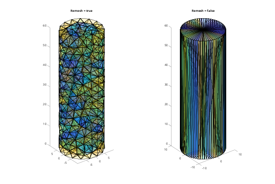
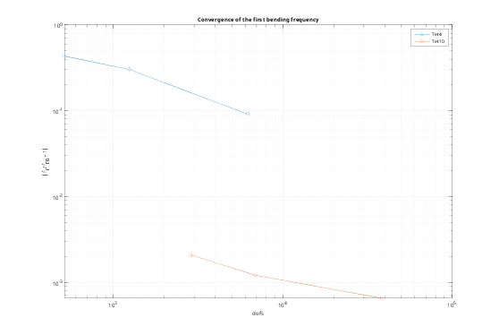
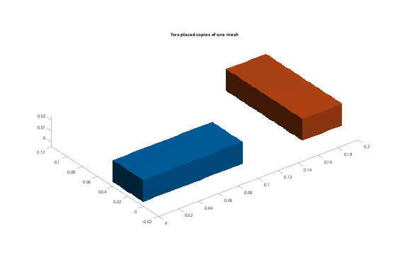

Contents
Tutorial 2 - Meshing: STL, Gmsh, element order and convergence
This tutorial covers:
- fem.meshSTL options: Size, Order, Remesh, FeatureAngle
- Tet4 vs Tet10 elements, and a mesh convergence study
- loading meshes made in the Gmsh GUI (fem.readMsh)
- placing parts with Scale and transform
addpath(fileparts(fileparts(mfilename('fullpath')))); out = fullfile(tempdir, 'femTutorials'); if ~isfolder(out), mkdir(out); end
1. Checking Gmsh
The toolbox calls the Gmsh executable. It uses the GMSH environment variable if set, otherwise 'gmsh' on the PATH, e.g. setenv('GMSH', 'C:\gmsh-4.13.1-Windows64\gmsh.exe')
fem.gmsh('--version');
4.12.1
2. Meshing an STL directly
fem.meshSTL returns nodes X (n x 3) and tetrahedra T (ne x 4 or 10). With Remesh = true (default), Gmsh splits the STL into smooth patches, using FeatureAngle to detect edges, and remeshes them to the requested Size. This helps with CAD STLs, which are full of long thin triangles. Remesh = false keeps the STL triangles as the boundary of the mesh.
cyl = fullfile(out, 'cylinder.stl'); fem.cylinderSTL(cyl, [0 0], 10, 0, 60); % r = 10, height 60 (mm) [X1, T1] = fem.meshSTL(cyl, Size = 4); [X2, T2] = fem.meshSTL(cyl, Remesh = false); fprintf('remeshed: %d tets, STL kept as boundary: %d tets\n', size(T1, 1), size(T2, 1)); figure('Color', 'w'); subplot(1, 2, 1); tetramesh(T1(:,1:4), X1, 'FaceAlpha', 0.1); axis equal; title('Remesh = true'); subplot(1, 2, 2); tetramesh(T2(:,1:4), X2, 'FaceAlpha', 0.1); axis equal; title('Remesh = false');
remeshed: 1615 tets, STL kept as boundary: 232 tets

3. Tet4 vs Tet10: a convergence study
Linear tetrahedra (Tet4) are too stiff in bending ("locking") and need very fine meshes. Quadratic Tet10 elements are accurate on coarse meshes and are the default. We compute the first cantilever frequency on increasingly fine meshes and compare with Euler-Bernoulli.
beam = fullfile(out, 'beam.stl'); fem.boxSTL(beam, [0 0 0], [1000 50 50]); steel = fem.material(210e9, 0.3, 7850); fEB = 1.875104^2/(2*pi)*sqrt(210e9*0.05^4/12/(7850*0.05^2)); sizes = [50 25 12.5]; err = zeros(2, numel(sizes)); ndof = err; for order = 1:2 for k = 1:numel(sizes) b = fem.Body(beam, steel, Size = sizes(k), Order = order, Scale = 1e-3); a = fem.Assembly(); a.add(b); a.fix(1, @(X) X(:,1) < 1e-9); [K, M] = a.system(); [~, f] = fem.modes(K, M, 1); err(order, k) = f/fEB - 1; ndof(order, k) = size(K, 1); end end disp(array2table(100*err, 'VariableNames', compose('h=%g', sizes), ... 'RowNames', {'Tet4 error %', 'Tet10 error %'})); figure('Color', 'w'); loglog(ndof', abs(err'), 'o-'); grid on xlabel('dofs'); ylabel('|f_1/f_{EB} - 1|'); legend('Tet4', 'Tet10'); title('Convergence of the first bending frequency');
h=50 h=25 h=12.5
_______ _______ ________
Tet4 error % 43.349 30.32 9.1315
Tet10 error % 0.20855 0.12066 0.064954

4. Curved surfaces and Tet10
Tet10 edge nodes are placed on the curved surface that Gmsh reconstructs from the STL. On coarse meshes of small radii this can fold an element; meshSTL then remeshes with straight-sided Tet10 and gives a warning. A smaller Size keeps the curved geometry.
5. Meshes from the Gmsh GUI
For full control (local refinement, physical groups, ...), mesh in Gmsh yourself and save as ASCII .msh, version 2.2 or 4.1. Pass the .msh file to fem.Body, or read it with fem.readMsh. Here we create such a file through fem.gmsh, which takes any Gmsh command-line arguments.
geo = fullfile(out, 'block.geo'); writelines(['SetFactory("OpenCASCADE"); Box(1) = {0, 0, 0, 100, 40, 20};' ... 'Mesh.MeshSizeMax = 8; Mesh.ElementOrder = 2;'], geo); msh = fullfile(out, 'block.msh'); fem.gmsh(sprintf('"%s" -3 -format msh41 -o "%s" -v 0', geo, msh)); block = fem.Body(msh, steel, Scale = 1e-3); fprintf('%s.msh: %d nodes, %d elements\n', block.Name, block.nNode, size(block.T, 1));
block.msh: 1941 nodes, 980 elements
6. Units and placement
Scale converts coordinates after meshing, so Size stays in file units. transform(R, t) moves a body rigidly (x -> R*x + t), e.g. to place the same part twice in an assembly.
copy = fem.Body(msh, steel, Scale = 1e-3, Name = 'block2'); Rz = [0 -1 0; 1 0 0; 0 0 1]; % 90 degrees about z copy.transform(Rz, [0.2 0 0]); a = fem.Assembly(); a.add(block); a.add(copy); figure('Color', 'w'); a.plot(); title('Two placed copies of one mesh');
